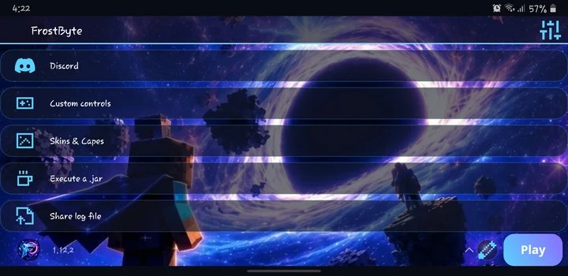
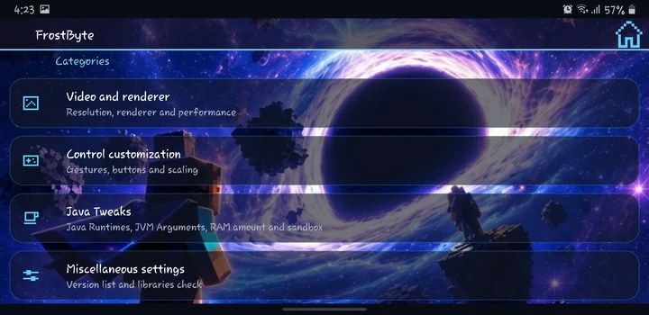
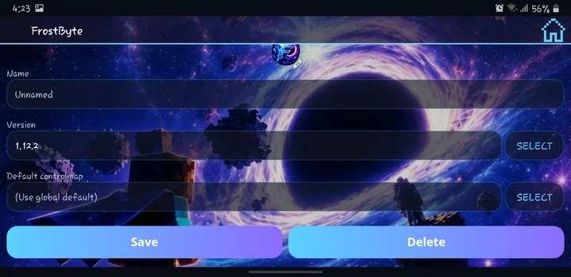
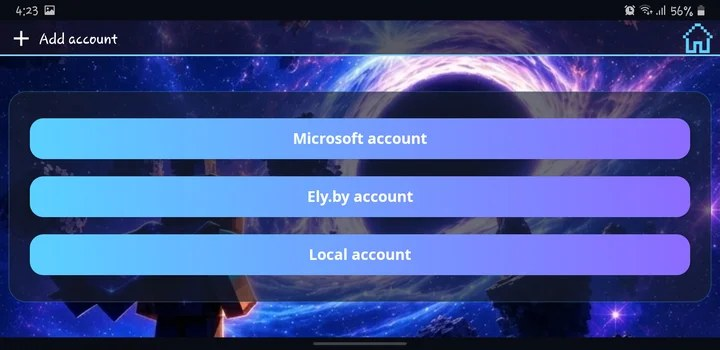

See it before you install it
A look inside FrostByte
Real screens from the actual app — no staged renders.




Screenshots reflect the current release. Some UI details may change between versions.